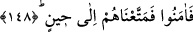

etmesi; kavminin bir takım mesnetsiz mazeret ve bahaneler ileri sürmesi ve iman
etmelerini bir takım emarelerini görmelerine bağlamaları gibi onunla kavmi arasında
geçen hususları zikrederek kaçış sebeplerini hatırlatır.
Bu hatırlatmanın amacı şudur: Yunus (a.s.)’ın kavminin burada hikaye ve beyan
edilmiş olan imanın, “fâ-i takibiyye”nin ifade ettiği ve imanın Yunus (a.s.)’ın
gönderilmesi üzerine -ilk anda hemen gerçekleştiği zannedilse de- hemen
gerçekleşmediğini ve bilakis bazı maceralardan sonra bu imanın hâsıl olduğunu
bildirmek içindir. Zira onlara bakan, onların yüz yirmi, yüz otuz, yahut yüz yetmiş bin
kişi olduklarını söyler. Burada şüphe ifade eden “veya” anlamına gelen “ ” kelimesi
muhataplara göredir. Zira Allah Teâlâ’nın bir şeyden şüphe etmesi muhaldir. Bu şekilde
muhataba durumu onun şüphe edeceği bir tarza anlatmak ise kavmin çok kalabalık
olduğunu ifade etmek içindir. Bu ve benzeri görünüşte şüpheli gibi anlatılan sözlere
verilecek cevap budur. Nitekim Allah Teâlâ’nın şu âyetlerdeki ifadeleri de buna benzer:
“(Allah’a yönelenleri) arıtmak, (kötüleri) sakındırmak için öğüt telkin edenlere”
(el-Mürselât 77/6) “Ona yumuşak söz söyleyin. Belki o, aklını başına alır veya
korkar.” (Tâhâ 20/44) “(Resûlüm!) Biz onu böylece Arapça bir Kur’an olarak
indirdik ve onda ikazları tekrar tekrar açıkladık. Umulur ki onlar (bu sayede
günahtan) korunurlar; yahut da o (Kur’an) kendileri için bir ibret ortaya koyar.”
(Tâhâ 20/113)
148. Sonunda ona iman ettiler, bunun üzerine biz de onları bir süreye kadar
yaşattık.
Azâbın geleceği alâmetleri müşâhede ettikten sonra samimi olarak “Sonunda ona
iman ettiler, bunun üzerine biz de onları” dünya hayatında Allah Teâlâ’nın onlara
takdir ettiği “bir süreye kadar yaşattık.” Bu, azabın ve cezanın onlar üzerinden
kaldırıldığını ifade eden kinaye bir sözdür.
Rivâyete göre Yunus (a.s.) bir ağacın altında uyuya kaldı. Uyandığında ağaç
kurumuştu. Yunus (a.s.) o bölgeden çıktı. Irak’ta Ninova şehrine yakın bir yere uğradı.
Orada bir gencin koyun otlattığını gördü. Çobana kim olduğunu sordu. Çoban “Ben
Yunus’un kavmindenim” dedi. Yunus: “Kavmine döndüğün zaman benden selâm söyle.
Beni gördüğünü ve benimle konuştuğunu onlara haber ver” dedi. Çoban: “Şayet sen
Yunus isen bir kimsenin verdiği haberi delil ve şahitle ispat edemezse onu öldürürler.
Bunu da bilirsin.” dedi. Zira Yunus’un şeriatında yalan söyleyen öldürülürdü. Çoban:
“Peki bu haberin doğru olduğuna dair bana kim şahitlik edecek?” dedi. Yunus: “Bu ağaç
ve işte şu bulunduğumuz yer şahitlik eder” dedi. Çoban: “Onlara bunu emret!” dedi.
Yunus ağaca ve o yere: “Bu genç size geldiği zaman ona şahitlik edin” dedi. Onlar da: